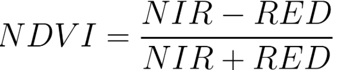

Objective: Learn to compute vegetation indices using band arithmetic and the normalizedDifference method.
Introduction
Earth Engine is capable of computing a variety of indices with the use of band arithmetic. This involves
the combination of two or more bands from an image, which can be done by adding, subtracting, multiplying,
or dividing. In this Lab, we will demonstrate the manual process and then provide faster methods to carry
out band arithmetic in Earth Engine.
Lab Instructions
Manual Method for NDVI
As you remember, NDVI is calculated by doing arithmetic on bands using the following formula:

NDVI = (NIR - RED) / (NIR + RED)
To compute the NDVI, we will introduce Earth Engine's implementation of band arithmetic. Cloud-based
band arithmetic is one of the most powerful aspects of Earth Engine because the platform's computers
are optimized for this type of heavy processing. Earth Engine automatically partitions calculations
across many computers as needed.
Copy and paste the following code into Earth Engine:
/////
// Band Arithmetic
/////
// Calculate NDVI using Sentinel 2
// Import and filter imagery by location and date.
var sfoPoint = ee.Geometry.Point(-122.3774, 37.6194); // long lat of San Francisco
var sfoImage = ee.ImageCollection('COPERNICUS/S2')
.filterBounds(sfoPoint)
.filterDate('2020-02-01', '2020-04-01')
.first();
// Display the image as a false color composite.
Map.centerObject(sfoImage, 11);
Map.addLayer(sfoImage, {
bands: ['B8', 'B4', 'B3'],
min: 0,
max: 2000
}, 'False color');
The above code creates a false color image, as we have done in previous labs. Now we will look at
using band arithmetic to create the NDVI.
The simplest mathematical operations in Earth Engine are the add, subtract,
multiply, and divide methods. Let's select the near-infrared and red bands
and use these operations to calculate NDVI:
// Extract the near infrared and red bands.
var nir = sfoImage.select('B8');
var red = sfoImage.select('B4');
// Calculate the numerator and denominator using subtraction and addition.
var numerator = nir.subtract(red);
var denominator = nir.add(red);
// Now calculate NDVI.
var ndvi = numerator.divide(denominator);
// Add the layer to our map with a palette.
var vegPalette = ['red', 'white', 'green'];
Map.addLayer(ndvi, {
min: -1,
max: 1,
palette: vegPalette
}, 'NDVI Manual');
Examine the resulting index using the Inspector to pick out pixel values in areas
of vegetation and non-vegetation. NDVI outputs vary between −1 and 1. High amounts of green vegetation
have values around 0.8–0.9. Absence of green leaves gives values near 0, and water gives values near −1.
Question 1 (10 Points):
Explore the image. Find a location that contrasts healthy vegetation and non-vegetation. Screenshot
that area and write a caption explaining the differences in NDVI values.
Normalized differences like NDVI are so common in remote sensing that Earth Engine provides the ability
to do that particular sequence of subtraction, addition, and division in a single step, using the
normalizedDifference method.
The NDVI computation can be replaced with one line of code:
// Use the built-in normalizedDifference function.
var ndviND = sfoImage.normalizedDifference(['B8', 'B4']);
Map.addLayer(ndviND, {
min: -1,
max: 1,
palette: vegPalette
}, 'NDVI normalizedDiff');
Important: Note that the order in which you provide the two bands to normalizedDifference
is important. We use B8 (near-infrared) as the first parameter, and B4 (red) as the second. If your two
computations of NDVI do not look identical, check the order of your bands.
Using Normalized Difference for NDWI
The normalized difference approach is used for many different indices. Let's apply the same method to
another index.
The Normalized Difference Water Index (NDWI) was developed by Gao (1996) as an index
of vegetation water content. The index is sensitive to changes in the liquid content of vegetation canopies.
This means it can be used to detect vegetation experiencing drought conditions or differentiate crop
irrigation levels. It is also sometimes called the Normalized Difference Moisture Index (NDMI).
NDWI = (NIR - SWIR) / (NIR + SWIR)
// Use normalizedDifference to calculate NDWI
var ndwi = sfoImage.normalizedDifference(['B8', 'B11']);
var waterPalette = ['white', 'blue'];
Map.addLayer(ndwi, {
min: -0.5,
max: 1,
palette: waterPalette
}, 'NDWI');
Look at the same area that you looked at in Question 1. Look at it now with NDWI. What does this
index tell you about the previous interpretation you had? Include a screenshot.
Additional Resources
Read the following articles to learn about more spectral indices:
Select a different index from the articles in Medium or another source. Using either the
normalizedDifference method or the manual method, write code that:
Calculates the index
Adds the layer to Earth Engine with a good palette for visualization
Interprets what this new index tells you about your site
Turn in a screenshot of your AOI from Questions 1 and 2 with the new index. Include screenshots.
Question 4 (10 Points):
Add your URL for your code to your document with your screenshots and submit.
Key Concepts
NDVI (Normalized Difference Vegetation Index)
Measures vegetation health and density
Range: -1 to +1
Interpretation:
0.8-0.9: Dense healthy vegetation
~0: No vegetation/bare soil
Negative: Water bodies
NDWI (Normalized Difference Water Index)
Measures vegetation water content and moisture stress
Applications:
Drought detection
Irrigation monitoring
Crop health assessment
📧 Lab Submission
Submit lab via email.
Subject:Lab 8 - Band Arithmetic NDVI - [Your Name]
Include:
Shareable link to your GEE script
Screenshots for Question 1 (NDVI comparison)
Screenshots for Question 2 (NDWI interpretation)
Screenshots for Question 3 (new index with interpretation)